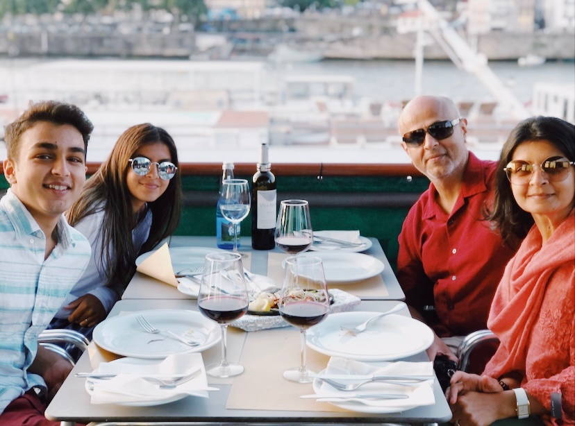
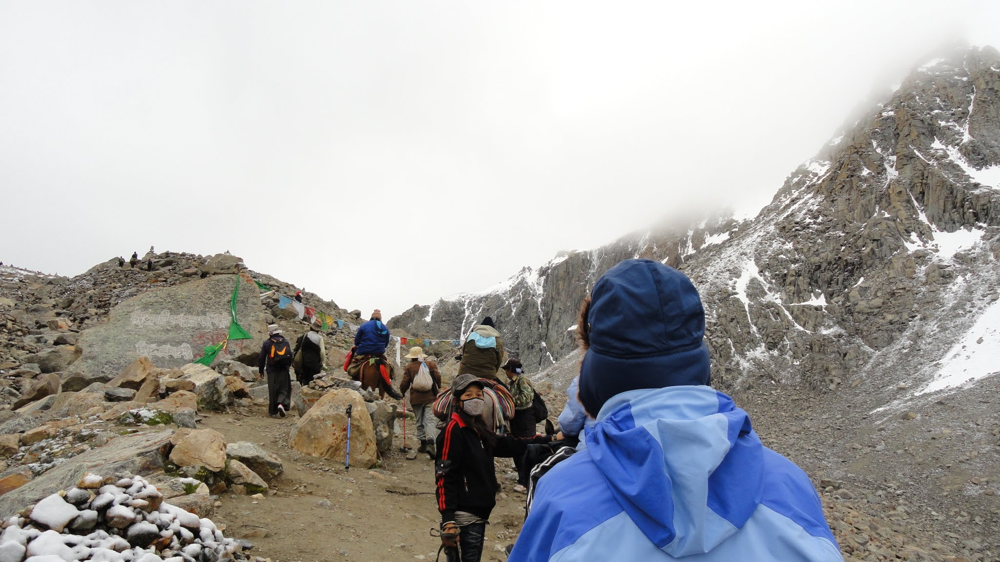
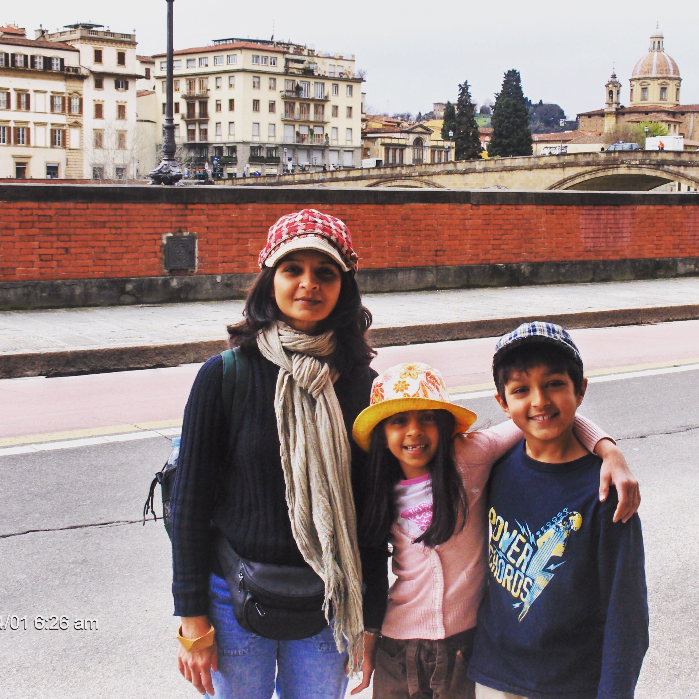
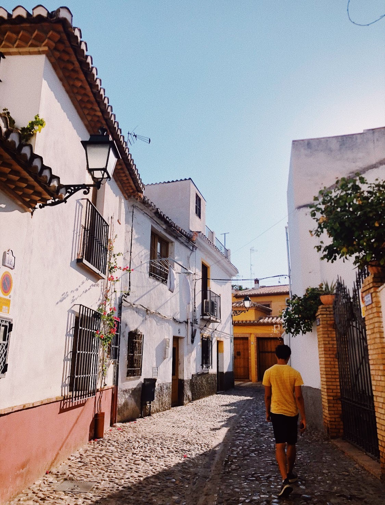
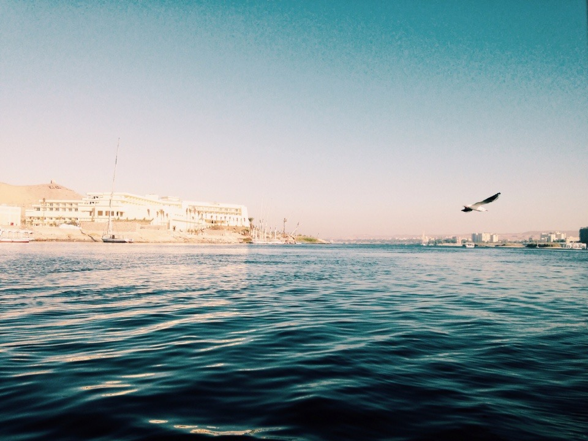
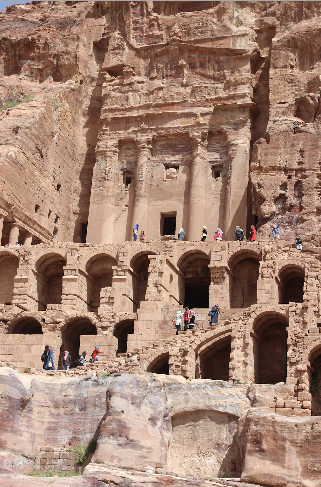

I love to travel. Throughout my life, I have been lucky enough to have visited numerous countries and continents. The pictures below are from my trips to Tibet, Egypt, Morocco, Spain, Italy, Portugal, Iceland, Israel, and Jordan. My all time favorite trip would have to be Portugal because it was the first trip where I didn't feel like a kid, and actually felt like an adult. I was allowed to do more on this trip with my parents and brother, unlike my past trips where I wasn't allowed to due to my age. Sometimes I wish I had gone to Italy later in my life. Italy was my first trip outside of the U.S., when I was 8 years old. We visited so many places that I had learned about in school years later, which is why I wish I could go back to see and understand the history.






